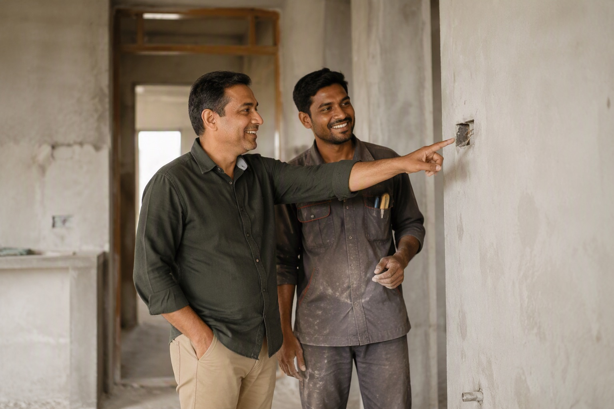

You Received Duplicate Finolex Wire: What To Do Now

Stop the installation immediately, do not pay for the suspect material, preserve the cartons, inner inserts, a cut sample and the invoice, photograph everything including the verification screen, and raise it with the seller in writing before anything else. What you can recover depends almost entirely on how much of it is still outside the wall.
Step 1 — Stop, before anything else
Every hour of continued installation reduces your options and increases the eventual cost. Concealed wire cannot be inspected, cannot be returned, and can only be replaced by breaking finished walls. If a coil has failed verification, no part of the delivery should go into a chase until the question is settled.
Step 2 — Preserve the evidence
This determines whether you have a claim or an argument. Keep:
- The cartons, including any that are already empty.
- The inner inserts or codes from inside the boxes.
- A cut sample of the wire itself, at least a foot, showing the insulation markings and the conductor end.
- The invoice and any delivery challan.
- Photographs of the carton, the label, both QR codes, the verification screens including any scan history, the insulation markings and the cut copper end.
- Any WhatsApp messages with the seller, especially the original quote.
Photograph before you move anything. A carton that has been carried around a site for a week photographs badly and argues badly.
Step 3 — Raise it with the seller, in writing
Message rather than telephone, so there is a record. State plainly: which cartons, which check failed, what the verification screen said, and what you want — replacement with verified stock, or a refund. Attach the photographs.
Watch the response, because it is informative. A genuine seller who has been supplied bad stock himself will want the cartons back and will replace them, because his own supplier owes him the same remedy. Deflection, delay or an offer of a discount to keep the material are all answers to a different question than the one you asked.
Step 4 — Escalate to Finolex
Counterfeiting harms the brand more than it harms any single buyer, and manufacturers do act on specific, evidenced reports. Contact Finolex customer care on 1800-209-0166 with the batch number, the QR verification result, the seller's name and location, and your photographs. Ask them to confirm whether the code and batch are legitimate and where that batch was despatched.
Two things make a report actionable: the batch number and the seller's identity. Without those, a complaint cannot be traced to a source.
Step 5 — If some is already installed
Assess rather than panic. Not every situation requires rewiring:
| Situation | Reasonable action |
|---|---|
| Wire pulled but not yet plastered over | Pull it out and replace. Cost is labour only |
| Concealed, on light and fan circuits | Have an electrician measure load and check temperature under load; replace at the next opportunity |
| Concealed, on AC, geyser or power circuits | Replace. These are the highest-load circuits and the ones where under-specification copper actually fails |
| Concealed, mains from meter to DB | Replace without debate. This carries the whole house |
Ask the electrician to check whether the installed sizes match the design as well — an undersized circuit and a duplicate coil produce the same failure and often travel together.
Step 6 — Fix the process, not just the delivery
Duplicate material almost always enters through a process gap rather than bad luck. Before replacing the stock, close the gap:
- Buy in your own name, not on a with-material contract.
- Buy from an authorised dealer who will show the certificate.
- Insist on pay on delivery.
- Verify at your own site using the 12-point checklist, including the inner QR code.
If you would like a second opinion on material already delivered, send photographs of the carton, the label and the wire markings to 88676 76700. We will tell you what we see, whether or not you bought it from us — we have been doing this in Bengaluru for 35 years and we would rather a house was wired correctly than win an argument about where it was bought.
Buying Finolex in Bangalore? Mount Cable India is one of the largest distributors of Finolex cables in the country. WhatsApp your list to 88676 76700 for an exact quote within 60 minutes — free next-day delivery, pay on delivery, and you scan and verify every box at your site before any money changes hands.
Frequently asked questions
What should I do if I receive duplicate Finolex wire?
What evidence do I need to make a complaint?
How do I report counterfeit Finolex wire to the company?
What if the duplicate wire is already inside the wall?
How should I raise the issue with the seller?
Can I get a second opinion on wire I already bought?
Ready to order for your home?
Upload your wiring list for an instant quote — 100% original material, free next-day delivery across Bangalore.